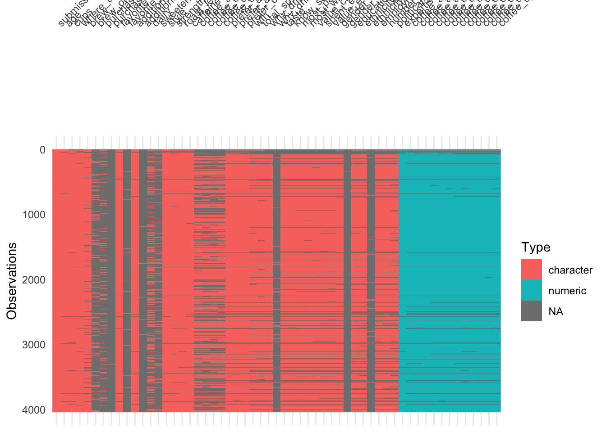
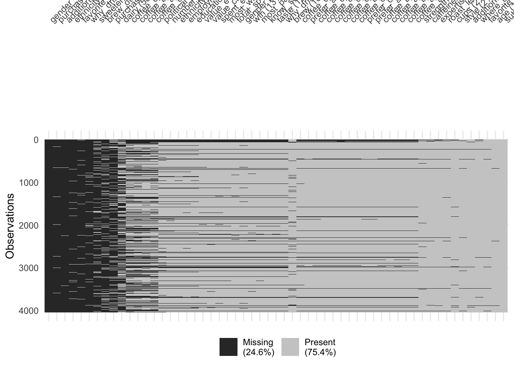
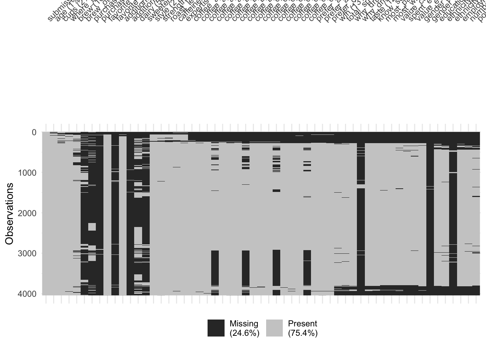
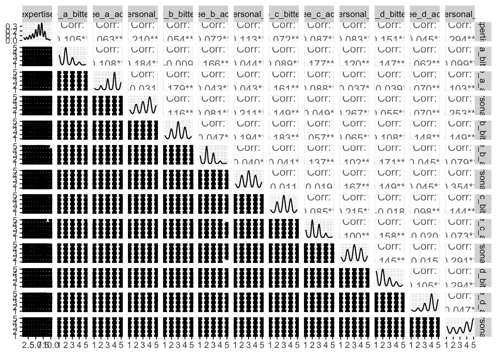

Rows: 4042 Columns: 57
── Column specification ────────────────────────────────────────────────────────
Delimiter: ","
chr (44): submission_id, age, cups, where_drink, brew, brew_other, purchase,...
dbl (13): expertise, coffee_a_bitterness, coffee_a_acidity, coffee_a_persona...
ℹ Use `spec()` to retrieve the full column specification for this data.
ℹ Specify the column types or set `show_col_types = FALSE` to quiet this message.
# partition into training and test setscoffee_split <-initial_split(coffee_survey, prop =0.8)coffee_train <-training(coffee_split)coffee_test <-testing(coffee_split)
It includes the following features:
variable
class
description
submission_id
character
Submission ID
age
character
What is your age?
cups
character
How many cups of coffee do you typically drink per day?
where_drink
character
Where do you typically drink coffee?
brew
character
How do you brew coffee at home?
brew_other
character
How else do you brew coffee at home?
purchase
character
On the go, where do you typically purchase coffee?
purchase_other
character
Where else do you purchase coffee?
favorite
character
What is your favorite coffee drink?
favorite_specify
character
Please specify what your favorite coffee drink is
additions
character
Do you usually add anything to your coffee?
additions_other
character
What else do you add to your coffee?
dairy
character
What kind of dairy do you add?
sweetener
character
What kind of sugar or sweetener do you add?
style
character
Before today’s tasting, which of the following best described what kind of coffee you like?
strength
character
How strong do you like your coffee?
roast_level
character
What roast level of coffee do you prefer?
caffeine
character
How much caffeine do you like in your coffee?
expertise
numeric
Lastly, how would you rate your own coffee expertise?
coffee_a_bitterness
numeric
Coffee A - Bitterness
coffee_a_acidity
numeric
Coffee A - Acidity
coffee_a_personal_preference
numeric
Coffee A - Personal Preference
coffee_a_notes
character
Coffee A - Notes
coffee_b_bitterness
numeric
Coffee B - Bitterness
coffee_b_acidity
numeric
Coffee B - Acidity
coffee_b_personal_preference
numeric
Coffee B - Personal Preference
coffee_b_notes
character
Coffee B - Notes
coffee_c_bitterness
numeric
Coffee C - Bitterness
coffee_c_acidity
numeric
Coffee C - Acidity
coffee_c_personal_preference
numeric
Coffee C - Personal Preference
coffee_c_notes
character
Coffee C - Notes
coffee_d_bitterness
numeric
Coffee D - Bitterness
coffee_d_acidity
numeric
Coffee D - Acidity
coffee_d_personal_preference
numeric
Coffee D - Personal Preference
coffee_d_notes
character
Coffee D - Notes
prefer_abc
character
Between Coffee A, Coffee B, and Coffee C which did you prefer?
prefer_ad
character
Between Coffee A and Coffee D, which did you prefer?
prefer_overall
character
Lastly, what was your favorite overall coffee?
wfh
character
Do you work from home or in person?
total_spend
character
In total, much money do you typically spend on coffee in a month?
why_drink
character
Why do you drink coffee?
why_drink_other
character
Other reason for drinking coffee
taste
character
Do you like the taste of coffee?
know_source
character
Do you know where your coffee comes from?
most_paid
character
What is the most you’ve ever paid for a cup of coffee?
most_willing
character
What is the most you’d ever be willing to pay for a cup of coffee?
value_cafe
character
Do you feel like you’re getting good value for your money when you buy coffee at a cafe?
spent_equipment
character
Approximately how much have you spent on coffee equipment in the past 5 years?
value_equipment
character
Do you feel like you’re getting good value for your money when you buy coffee at a cafe?
gender
character
Gender
gender_specify
character
Gender (please specify)
education_level
character
Education Level
ethnicity_race
character
Ethnicity/Race
ethnicity_race_specify
character
Ethnicity/Race (please specify)
employment_status
character
Employment Status
number_children
character
Number of Children
political_affiliation
character
Political Affiliation
Our ultimate goal on a future assignment is to predict whether or not individuals like coffee D based on their survey responses and taste tests for coffees A-C.1 We will use a binary form of coffee_d_personal_preference variable as our target.
Your turn: Examine expertise using a histogram and appropriate binwidth. Describe the features of this variable.
# add code here
Add response here.
Your turn: Each coffee has three numeric ratings by the respondents: bitterness, acidity, and personal preference. Create a histogram for each of these characteristics, faceted by coffee type. What do you notice?
TipWrangling the data for easier visualization
The original structure of the data is one column for each coffee for each characteristic. You could create separate graphs for each of the 12 columns, but that seems like a lot of work. Instead, consider using the pivot_longer() function to restructure the data to one row per coffee per characteristic. This will make it easier to create the faceted histograms.
# A tibble: 48,504 × 3
coffee measure value
<chr> <chr> <dbl>
1 a bitterness NA
2 a acidity NA
3 a personal NA
4 b bitterness NA
5 b acidity NA
6 b personal NA
7 c bitterness NA
8 c acidity NA
9 c personal NA
10 d bitterness NA
# ℹ 48,494 more rows
# add code here
Add response here.
Examining categorical variables
Your turn: Examine prefer_overall graphically. Record your observations.
# add code here
Add response here.
Your turn: Examine cups, brew, and roast_level. Record your observations, in particular how you might need to handle these variables in the modeling stage.
# add code here
Add response here.
# add code here
Add response here.
# add code here
Add response here.
Making comparisons
Your turn: Compare the relationship between coffee_d_personal_preference and the respondents’ preferred roast levels. Use a proportional bar chart to visualize the relationship.
Tip
Use position = "fill" with geom_bar() to automatically calculate percentages for the chart.
# add code here
Add response here.
Your turn: Examine the relationship between the respondents’ numeric ratings for acidity, bitterness, and personal preference for each of the four coffees and compare to their overall preference. Record your observations.
Add response here.
Data quality
Missingness
Demonstration: Use {visdat} to visualize missingness patterns in the data set.
library(visdat)# quick glance of missingness by row/column ordervis_dat(coffee_survey)

# reorder columns based on % missingvis_miss(coffee_survey, sort_miss =TRUE)

# cluster rows based on similarity in missingness patternsvis_miss(coffee_survey, cluster =TRUE)

Your turn: Record your observations on the missingness patterns in the data set. What variables have high missingness? Is this surprising? What might you do to variables or observations with high degrees of missingness?
Add response here.
Outliers
Demonstration: Generate a scatterplot matrix for all the numeric variables in the data set.2
Warning: Removed 283 rows containing missing values or values outside the scale range
(`geom_point()`).
Warning: Removed 279 rows containing missing values or values outside the scale range
(`geom_point()`).
Warning: Removed 292 rows containing missing values or values outside the scale range
(`geom_point()`).
Warning: Removed 285 rows containing missing values or values outside the scale range
(`geom_point()`).
Warning: Removed 280 rows containing missing values or values outside the scale range
(`geom_point()`).
Warning: Removed 287 rows containing missing values or values outside the scale range
(`geom_point()`).
Warning: Removed 286 rows containing missing values or values outside the scale range
(`geom_point()`).
Removed 286 rows containing missing values or values outside the scale range
(`geom_point()`).
Warning: Removed 297 rows containing missing values or values outside the scale range
(`geom_point()`).
Warning: Removed 286 rows containing missing values or values outside the scale range
(`geom_point()`).
Warning: Removed 281 rows containing missing values or values outside the scale range
(`geom_point()`).
Warning: Removed 277 rows containing non-finite outside the scale range
(`stat_density()`).
Warning: Removed 282 rows containing missing values or values outside the scale range
(`geom_point()`).
Warning: Removed 284 rows containing missing values or values outside the scale range
(`geom_point()`).
Warning: Removed 295 rows containing missing values or values outside the scale range
(`geom_point()`).
Warning: Removed 286 rows containing missing values or values outside the scale range
(`geom_point()`).
Warning: Removed 285 rows containing missing values or values outside the scale range
(`geom_point()`).
Warning: Removed 293 rows containing missing values or values outside the scale range
(`geom_point()`).
Warning: Removed 287 rows containing missing values or values outside the scale range
(`geom_point()`).
Warning: Removed 290 rows containing missing values or values outside the scale range
(`geom_point()`).
Warning: Removed 299 rows containing missing values or values outside the scale range
(`geom_point()`).
Warning: Removed 285 rows containing missing values or values outside the scale range
(`geom_point()`).
Warning: Removed 286 rows containing missing values or values outside the scale range
(`geom_point()`).
Warning: Removed 288 rows containing missing values or values outside the scale range
(`geom_point()`).
Warning: Removed 278 rows containing non-finite outside the scale range
(`stat_density()`).

Your turn: Examine the distribution of roast/gender and roast/cups. Describe the patterns you see and anything that is of particular interest given the model we will estimate.
# add code here
# add code here
Add response here.
Footnotes
Think of it as a recommendation engine for future customers who do a survey and taste test for three varieties of coffee.↩︎
Not particularly helpful for this dataset, but a good practice to get into.↩︎